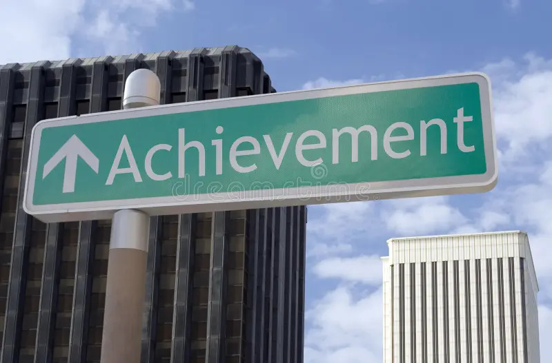

Achievements
This section showcases the achievements and accolades I've received throughout my career and personal life. Below are some of my notable achievements:
- Best Student Award - 2022: Awarded by XYZ University for academic excellence.
- Employee of the Year - 2021: Recognized for outstanding performance and contribution to the company.
- First Place in Coding Hackathon - 2020: Led a team to win a national-level coding competition.
- Published Research Paper: Authored a paper on "AI in Healthcare" published in an international journal.
- Volunteer Service Award: Recognized for contributing over 100 hours of community service in environmental conservation.
- Certified Data Scientist: Earned certification from ABC Institute, specializing in Machine Learning and Data Analysis.
- Project Lead - XYZ Startup: Led the development team for a successful startup project in e-commerce.
- Top Innovator Award: Received for presenting an innovative solution at a technology summit.
- Public Speaker: Invited as a keynote speaker at various conferences and events on technology and innovation.
- Mentor & Coach: Guided several students and professionals in their learning and career journey.